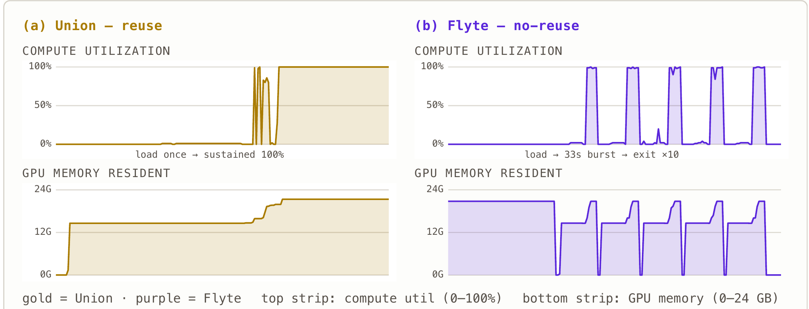

Flyte Systems Group · Technical report FSG-26-04 · July 2026
Reuse or Reload
A GPU-utilization study of batch LLM inference on Flyte v2
Abstract
Serving large-model batch inference under an orchestrator forces a choice: keep a GPU worker
warm across many calls, or spin a fresh container per call. We run one identical vLLM workload
— 500 GSM8K questions through Qwen2.5-7B on an NVIDIA L4 — two ways. With container
reuse on a managed Union cluster the job finishes in 404 s; a no-reuse variant on open-source
Flyte takes 1,665 s — 4.1× slower — and, measured with nvidia-smi,
keeps the GPU actually computing only 16% of the run while a model sits resident 86% of it, where the
reuse GPU, warm, holds a steady 100%.
Results at a glance
| Metric | Union · reuse | Flyte · no-reuse |
|---|---|---|
| Wall-clock, 500 questions | 404 s | 1,665 s (4.1×) |
| Model loads for the job | 2 | 10 |
| Cold start, amortized / question | ~0.5 s | ~3.7 s |
| Effective batch size | up to 256 | 50 |
| Peak decode throughput | 1,424 tok/s | 433 tok/s |
| Mean GPU utilization | 35.4% | 15.7% |
| Utilization while computing | sustained 100% | 33-s bursts |
| Time computing (util > 50%) | 35% | 16.1% |
| Time holding a model, idle | 61% | 86.5% |
| Per-worker cold start | once | 3 m 11 s × 10 |
Figure

Figure 1.
GPU traces, measured with nvidia-smi at 2 s, one L4 per run
(compute utilization on top, GPU memory on the bottom). (a) Union reuse: one model
load, after which utilization holds a steady 100% while the model stays resident — mean
utilization rises toward 100% as more work amortizes the single load. (b) Flyte no-reuse:
both strips sawtooth — ten model loads, each a brief ~33-s utilization burst, memory rising and
falling as pods come and go. Integrated, Flyte computes for only 16% of the run while holding a model
resident 86% of it: almost always occupied, almost never working. (Union sampled inside the worker
container; Flyte from an on-node DaemonSet.)